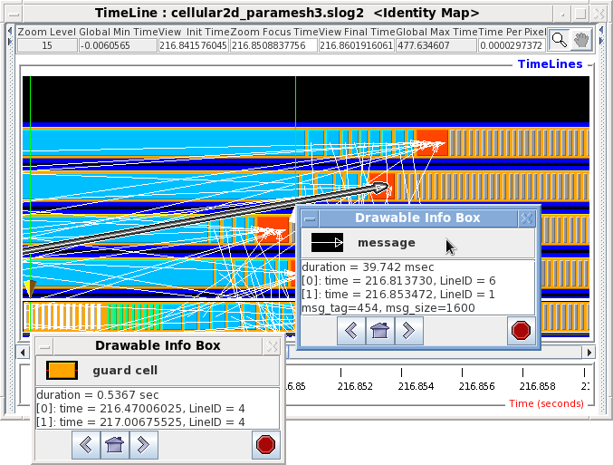

|

|
Similarly for real drawables, the Drawable Info Box can be brought up by right mouse clicking on the real drawables. In Figure 3.18, Drawable Info Boxes for a real arrow and a real state are shown. The Drawable Info Box for the arrow is created by clicking anywhere within the vicinity of the arrow body.3.6 The info box shows the starttime, start timeline ID, endtime, and ending timeline ID, as well as some extra information implemented by the native format. In this example, the extra information is the message size carried by the specific arrow. The message size is 1600 bytes. Both the clicked arrow and state are highlighted by 3D raised border3.7. The highlighted border is used to tell where clicked drawable is when viewport has been scrolled far away from the original clicked location. Also, there are a set of three navigation buttons at the bottom of the Drawable Info Box that navigate the viewport back to the starting or ending positions of the drawable as well as a home button that brings the viewport back to original clicked position of the drawable. The navigation buttons are meant to ease the task of identifying the very long drawable(relative to the viewport) in a busy logfile with large number of timelines.